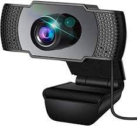
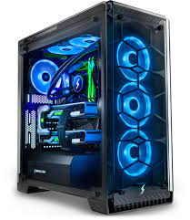
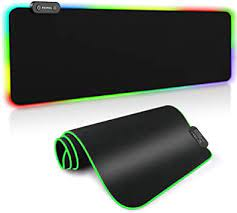

Test Image - Shoe
Output on Google Lens -
Shoes
Output on MobileNet Model - Shoes
Result - They were both same
Test Image -Keyboard
Output on Google Lens -
Keyboard
Output on MobileNet Model -
Gaming Keyboard
Result - MobileNet was more accurate
Test Image -Monitor 
Output on Google Lens - Tv
Output on MobileNet Model - Monitor
Result - MobileNet was more accurate
Test Image - Gaming Mouse
Output on Google Lens - G
Output on MobileNet Model - Mouse
Result - MobileNet was more accurate
Test Image - Gaming Mic
Output on Google Lens - Lamp
Output on MobileNet Model - Gaming Mic
Result - MobileNet was more accurate
Test Image - Speakers 
Output on Google Lens - Boxes
Output on MobileNet Model - Speakers
Result - MobileNet was more accurate
Test Image - Webcam 
Output on Google Lens - webcam
Output on MobileNet Model - webcam
Result -They were the same
Test Image - Gaming Computer
Output on Google Lens - Blue Box
Output on MobileNet Model - Gaming Pc
Result - MobileNet was more accurate
Test Image - Led Mousepad 
Output on Google Lens - Rug
Output on MobileNet Model
- Mousepad
Result - MobileNet was more accurate
Test Image - Router
Output on Google Lens - UFO
Output on MobileNet Model - Gaming Router
Result - MobileNet was more accurate